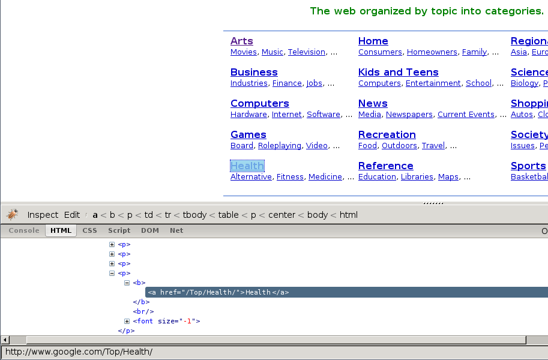
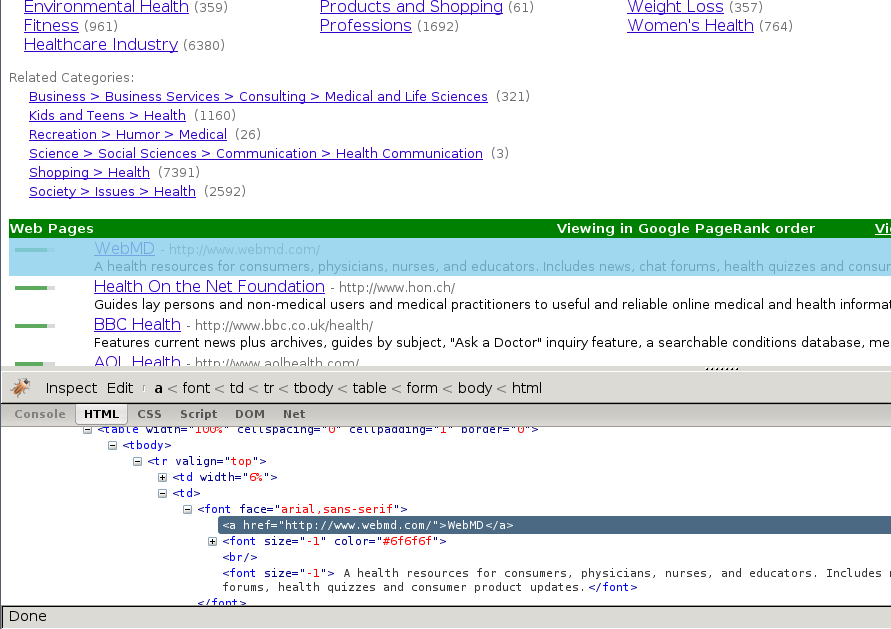
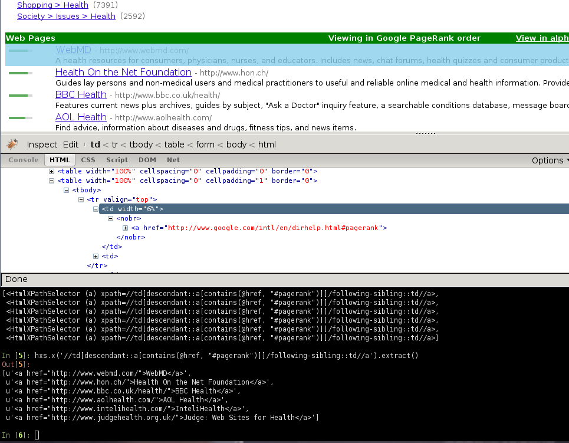

Using Firebug for scraping
备注
Google Directory, the example website used in this guide is no longer available as it has been shut down by Google. The concepts in this guide are still valid though. If you want to update this guide to use a new (working) site, your contribution will be more than welcome!. See Contributing to Scrapy for information on how to do so.
Introduction
This document explains how to use Firebug (a Firefox add-on) to make the scraping process easier and more fun. For other useful Firefox add-ons see Useful Firefox add-ons for scraping. There are some caveats with using Firefox add-ons to inspect pages, see Caveats with inspecting the live browser DOM.
In this example, we’ll show how to use Firebug to scrape data from the Google Directory, which contains the same data as the Open Directory Project used in the tutorial but with a different face.
Firebug comes with a very useful feature called Inspect Element which allows you to inspect the HTML code of the different page elements just by hovering your mouse over them. Otherwise you would have to search for the tags manually through the HTML body which can be a very tedious task.
In the following screenshot you can see the Inspect Element tool in action.
{kind=link}

At first sight, we can see that the directory is divided in categories, which are also divided in subcategories.
However, it seems that there are more subcategories than the ones being shown in this page, so we’ll keep looking:
{kind=link}

As expected, the subcategories contain links to other subcategories, and also links to actual websites, which is the purpose of the directory.
Getting links to follow
By looking at the category URLs we can see they share a pattern:
Once we know that, we are able to construct a regular expression to follow those links. For example, the following one:
directory\.google\.com/[A-Z][a-zA-Z_/]+$
So, based on that regular expression we can create the first crawling rule:
Rule(LinkExtractor(allow='directory.google.com/[A-Z][a-zA-Z_/]+$', ),
'parse_category',
follow=True,
),
The Rule object instructs
CrawlSpider based spiders how to follow the
category links. parse_category will be a method of the spider which will
process and extract data from those pages.
This is how the spider would look so far:
from scrapy.contrib.linkextractors import LinkExtractor
from scrapy.contrib.spiders import CrawlSpider, Rule
class GoogleDirectorySpider(CrawlSpider):
name = 'directory.google.com'
allowed_domains = ['directory.google.com']
start_urls = ['http://directory.google.com/']
rules = (
Rule(LinkExtractor(allow='directory\.google\.com/[A-Z][a-zA-Z_/]+$'),
'parse_category', follow=True,
),
)
def parse_category(self, response):
# write the category page data extraction code here
pass
Extracting the data
Now we’re going to write the code to extract data from those pages.
With the help of Firebug, we’ll take a look at some page containing links to websites (say http://directory.google.com/Top/Arts/Awards/) and find out how we can extract those links using Selectors. We’ll also use the Scrapy shell to test those XPath’s and make sure they work as we expect.
{kind=link}

As you can see, the page markup is not very descriptive: the elements don’t
contain id, class or any attribute that clearly identifies them, so
we’’ll use the ranking bars as a reference point to select the data to extract
when we construct our XPaths.
After using FireBug, we can see that each link is inside a td tag, which is
itself inside a tr tag that also contains the link’s ranking bar (in
another td).
So we can select the ranking bar, then find its parent (the tr), and then
finally, the link’s td (which contains the data we want to scrape).
This results in the following XPath:
//td[descendant::a[contains(@href, "#pagerank")]]/following-sibling::td//a
It’s important to use the Scrapy shell to test these complex XPath expressions and make sure they work as expected.
Basically, that expression will look for the ranking bar’s td element, and
then select any td element who has a descendant a element whose
href attribute contains the string #pagerank”
Of course, this is not the only XPath, and maybe not the simpler one to select
that data. Another approach could be, for example, to find any font tags
that have that grey colour of the links,
Finally, we can write our parse_category() method:
def parse_category(self, response):
# The path to website links in directory page
links = response.xpath('//td[descendant::a[contains(@href, "#pagerank")]]/following-sibling::td/font')
for link in links:
item = DirectoryItem()
item['name'] = link.xpath('a/text()').extract()
item['url'] = link.xpath('a/@href').extract()
item['description'] = link.xpath('font[2]/text()').extract()
yield item
Be aware that you may find some elements which appear in Firebug but
not in the original HTML, such as the typical case of <tbody>
elements.
or tags which Therefer in page HTML sources may on Firebug inspects the live DOM